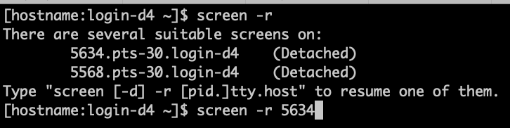

screen - the simple guide
just a simple guide for getting started with screen. nothing deep ;)
Tweetjust a simple guide for getting started with screen. nothing deep ;)
Tweet Like you can read about in man screen
screen is a "full-screen window manager". When you launch screen in a terminal,
you have basically started a window. That means that if you are dropped from your spotty Wifi, make your laptop go to sleep, or disconnect from ssh, you can go back to exactly what you were doing because you were using a screen.
In the middle of a long-running command? Put it under a 'screen'.
If you've done this before and you just want to start cleanly, you could kill all screens on a server using
pkill screen first.
To start, it's easy just type screen. Then you are under a screen! To help you understand, immediately type in your shell something like
echo this is my first screen
enter this command, then continue on below.
Screen sessions live on the server where you start them, so remember where you started them!
For example, if your screen sessions started on login-s1,
ssh to that server after you log in, ssh login-s1
if you aren't there already.
'detach' is the one keyboard SEQUENCE to remember, so type
If you have a single screen, it is as easy as screen -r, if you were following so diligently, you might see something like this:
if there is more than one screen you'll need to choose a "pid", like in the picture below.

When multiple sessions exist, you will want to list your screen sessions.
screen -ls.
You can initially give a screen session a name, after all it's hard to remember random PIDs:
screen -S your_session_name
This actually happens sometimes, in that case just
screen -d -r
Inside of an already attached screen, just type
exit.
If you want to prevent making multiple screens, add this convenient alias to your shell!
alias screen='screen -D -R -S main'
comments